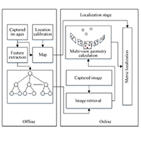
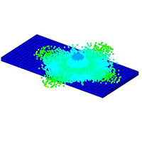
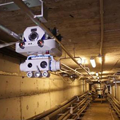

科学研究
严谨 求实 创新
实验室环境
为了打造良好的科研环境，实验室斥资购买了大量实验设备。这些设备主要可分为四大类：1.隧道机器人模拟巡检系统；2.输电线路模拟巡检系统；3.变电站机器人模拟巡检系统；4.精度受限的无人机自主导航式室内定位系统。

实验室环境

隧道机器人模拟巡检系统
输电线路模拟巡检系统

变电站机器人模拟巡检系统

精度受限的无人机自主导航式室内定位系统
论文
Viewpoint
Optimization Method for Flying Robot Inspecting Transmission Towers Based on
Point Cloud Model
TThis paper presents a method to derive optimal viewpoints for flying robot based transmission tower inspection, which applies point cloud model. A safe envelope is established according to safe transmission tower inspection rules. Essential inspection factors are proposed to evaluate the quality of candidate viewpoints, which includes visibility, dimensionality feature of point cloud as well as the distance between viewpoint and transmission power. A score function is constructed to quantify candidate viewpoints, while multiple attribute decision theory is applied to calculate the weight of each factor. Particle swarm optimization (PSO) is used to find the optimal viewpoints set. Both simulation experiment and practical observations are carried out. The results prove that optimal viewpoints have a great contribution for accurate transmission tower inspection. Final results are compared to patch-based method and proved to be feasible.
Fast
Robot Localization Approach Based on Manifold Regularization with Sparse Area
Features
Background/Introduction Robot localization can be considered as a cognition process that takes place during a robot estimating metric coordinates with vision. It provides a natural method for revealing the true autonomy of robots. In this paper, a kernel principal component analysis (PCA)-regularized least-square algorithm for robot localization with uncalibrated monocular visual information is presented. Our system is the first to use a manifold regularization strategy in robot localization, which achieves real-time localization using a harmonic function. Methods The core idea is to incorporate labelled and unlabelled observation data in offline training to generate a regression model smoothed by the intrinsic manifold embedded in area feature vectors. The harmonic function is employed to solve the online localization of new observations. Our key contributions include semi-supervised learning techniques for robot localization, the discovery and use of the visual manifold learned by kernel PCA and some solutions for simultaneous parameter selection. This simultaneous localization and mapping (SLAM) system combines dimension reduction methods, manifold regularization techniques and parameter selection to provide a paradigm of SLAM having self-contained theoretical foundations. Results and Conclusions In extensive experiments, we evaluate the localization errors from the perspective of reducing implementation and application difficulties in feature selection and magnitude ratio determination of labelled and unlabelled data. Then, a nonlinear optimization algorithm is adopted for simultaneous parameter selection. Our online localization algorithm outperformed the state-of-the-art appearance-based SLAM algorithms at a processing rate of 30 Hz for new data on a standard PC with a camera.

A
3D Laboratory Test-Platform for Overhead Power Line Inspection
Using unmanned aerial vehicles (UAVs) for performing automatic inspection of overhead power lines instead of foot patrols is an attractive option, since doing so is safer and have considerable cost savings, among other advantages. The purpose of this paper is to design a 3D laboratory test-platform to simulate UAVs' inspection of transmission lines and secondly, proposing an automated inspection strategy for UAVs in order to follow transmission lines. The construction and system architecture of our 3D test-platform is described in this paper. The inspection strategy contributes to knowledge pertaining to an automated inspection procedure and includes two steps: flight path planning for UAVs and visual tracking of the transmission lines. The 3D laboratory test-platform is applied to test the performance of the proposed strategy and the tracking results of our inspection strategy are subsequently presented. The availability of the 3D laboratory test-platform and the efficiency of our tracking algorithm are verified by experiments.

Undelayed
Initialization Using Dual Channel Vision for Ego-Motion in Power Line
Inspection
This paper presents a novel approach to the initialization of an ego-motion estimation technique for autonomous power line inspection. Dual channel vision, consisting of an infrared and optical camera, is typically adopted during inspection. The infrared camera is far more proficient at reliably detecting heated regions of the power tower which can be regarded as a prior relationship between the tower and cameras. Using the infrared camera, which is equipped parallel to the optical camera, an incomplete correspondence between the optical image and a 3D CAD model is established. Depending on the degree of correspondence, the initial pose of the CAD model in the optical image is estimated through two stages of coarse-to-fine estimation. The primary contributions of this paper include: 1) using dual vision for partial initialization; 2) incorporating two-stage algorithms to estimate an accurate pose quickly; 3) implementing an algorithm which functions correctly regardless of the motion blur or background texture. Experimental results consistently show that the initial pose can be estimated efficiently and robustly

Hybrid
velocity switching and fuzzy logic control scheme for cable tunnel inspection
robot
The mass and stiffness of cantilever are neglected; thus, the robot and load can be considered as point masses and are assumed to move in a two-dimensional, x-y plane. The coordinates of the trolley and load are (x M , y M ) and (x m , y m ). Triangular membership functions are chosen for the derivative of the robot position error, swing angle, the derivative of the swing angle and force input. A normalized universe of discourse is used for the three inputs and one output of the fuzzy logic controller. Scaling factors k 1, k 2 and k 3 are chosen to convert the three inputs of the system and activate the rule base effectively, while k 4 is selected to activate the system to generate the desired output. To simplify a rule base, the derivative of robot position error, swing angle, the derivative of swing angle and force are partitioned into five primary fuzzy sets as follows:

Visual
Data Driven Approach for Metric Localization in Substation
To localize inspection robot in an in-service substation costs much. How to discriminate its location among highly similar scenes is the main problem of localizing robot in the substation using vision. A novel approach for visual localization using image retrieval and multi-view geometry is proposed. It is applicable for autonomous inspection of in-service substation without additional modifications of the environment. The experimental results demonstrate the efficiency and reliability of our approach. They have been further discussed by means of parameters for image description, number of neighbouring images for coordinates estimation, training dataset selection and performance evaluation. They verified that our approach is a cost-effective solution to robot localization in in-service substation.

A
Safe Flight Approach of the UAV in the Electrical Line Inspection
In recent years, the UAV (Unmanned Aerial Vehicle) inspection for the electrical line has received increasing attentions due to the advantages of low costs, easiness to control and flexibility. The UAV can inspect the electrical tower independently and automatically by planning the flight path. But during the inspection along the path, the UAV is easily impacted by gust wind due to its light weight and small size, which always leads to the crash into the electrical tower. Thus, in this paper, a safe flight approach (SFA) is proposed to make the flight be safer during the inspection. The main contributions include: firstly, the piecewise linear interpolation method is proposed to fit the distribution curve of the electrical towers based on the GPS coordinates of the electrical towers; secondly, the no-fly zone on the both sides of the distribution curve are created, and a security distance formula (SDF) is raised to decide the width of the no-fly zone; thirdly, a gust wind formula (GWF) is proposed to improve the artificial potential field approach, which can contribute to the path planning of the UAV; finally, a flight path of the UAV can be planned using the SFA to make the UAV avoid colliding with the electric tower. The proposed approach is tested on the experiment to demonstrate its effectiveness.
A
Novel Hybrid Path Planning Algorithm at Macroscopic Level for Autonomous
Climbing Robot
Conference: 2018 3rd International Conference on Robotics and Automation Engineering (ICRAE)
A
Hierarchical Algorithm Based on Density Peaks Clustering and Ant Colony
Optimization for Traveling Salesman Problem
This paper proposed a hierarchical hybrid algorithm for Traveling Salesman Problem (TSP) according to the idea of divide-and-conquer. The TSP problem is decomposed into a few subproblems with small-scale nodes by Density Peaks Clustering algorithm (DPC). Every subproblem is resolved by Ant Colony Optimization algorithm (ACO), this is the lower layer. The center nodes of all subproblems constitute a new TSP problem, which forms the upper layer. All local tours of these subproblems are joined to generate the initial global tour in the same order that the center nodes are traversed in the upper layer TSP problem. Finally, the global tour is optimized by k-Opt algorithms. Thirty benchmark instances taken from TSPLIB are divided into three groups on the basis of problem size: small-scale, large-scale, and very large-scale. Experimental result shows that the proposed algorithm can obtain the solutions with higher accuracy and stronger robustness, and significantly reduce runtime, especially for the very large-scale TSP problem.
Failure
recovery method based on log for autonomous robotic system
Conference: 2017 International Conference on Robotics and Automation Sciences (ICRAS)

Hierarchical
detecting points path planning algorithm for climbing robot in spatial
trusses
Conference: 2017 International Conference on Robotics and Automation Sciences (ICRAS)
Improving
SPH Fluid Simulation Using Position Based Dynamics
Physically-based simulation technique has been widely used in creating astounding fluid appearances for film industries and computer games. However, stable and realistic fluid simulation based on SPH method is still challenging, as unstable solid boundary handling and numerical dissipation always plague current SPH fluid solvers. To solve these issues, we present a new method for improving SPH fluid simulation using position based dynamics (PBD). For the stable fluid-solid interaction, by combining the position constraint solved by PBD and the relative contribution of solid boundary particles, we significantly alleviate the penetration issues at fluid-solid interfaces. And in order to stably simulate turbulence diffusion of SPH fluids, we enforce a novel nonlinear vorticity constraint on each fluid particle, and then solve it using PBD to smooth the vorticity field. The implementation results demonstrate that our method significantly improves SPH method for simulating realistic and stable animations of fluid phenomena.

Research
on Key Technologies of Cable Tunnel Inspection Robot
2019 Chinese Automation Congress (CAC)

A
Deep Convolutional Networks for Monocular Road Segmentation
2018 Chinese Automation Congress (CAC)
Contrastive
sequential interaction network learning on co-evolving Riemannian spaces
The sequential interaction network usually find itself in a variety of applications, e.g., recommender system. Herein, inferring future interaction is of fundamental importance, and previous efforts are mainly focused on the dynamics in the classic zero-curvature Euclidean space. Despite the promising results achieved by previous methods, a range of significant issues still largely remains open: On the bipartite nature, is it appropriate to place user and item nodes in one identical space regardless of their inherent difference? On the network dynamics, instead of a fixed curvature space, will the representation spaces evolve when new interactions arrive continuously? On the learning paradigm, can we get rid of the label information costly to acquire? To address the aforementioned issues, we propose a novel Contrastive model for Sequential Interaction Network learning on Co-Evolving RiEmannian spaces, CSincere. To the best of our knowledge, we are the first to introduce a couple of co-evolving representation spaces, rather than a single or static space, and propose a co-contrastive learning for the sequential interaction network. In CSincere, we formulate a Cross-Space Aggregation for message-passing across representation spaces of different Riemannian geometries, and design a Neural Curvature Estimator based on Ricci curvatures for modeling the space evolvement over time. Thereafter, we present a Reweighed Co-Contrast between the temporal views of the sequential network, so that the couple of Riemannian spaces interact with each other for the interaction prediction without labels. Empirical results on 5 public datasets show the superiority of CSincere over the state-of-the-art methods./p>
Edge Detection with
Transformer
Convolutional neural networks have made significant progresses in edge detection by progressively exploring the context and semantic features. However, local details are gradually suppressed with the enlarging of receptive fields. Recently, vision transformer has shown excellent capability in capturing long-range dependencies. Inspired by this, we propose a novel transformer-based edge detector, \emph{Edge Detection TransformER (EDTER)}, to extract clear and crisp object boundaries and meaningful edges by exploiting the full image context information and detailed local cues simultaneously. EDTER works in two stages. In Stage I, a global transformer encoder is used to capture long-range global context on coarse-grained image patches. Then in Stage II, a local transformer encoder works on fine-grained patches to excavate the short-range local cues. Each transformer encoder is followed by an elaborately designed Bi-directional Multi-Level Aggregation decoder to achieve high-resolution features. Finally, the global context and local cues are combined by a Feature Fusion Module and fed into a decision head for edge prediction. Extensive experiments on BSDS500, NYUDv2, and Multicue demonstrate the superiority of EDTER in comparison with state-of-the-arts.

Viewpoint
Optimization Method for Flying Robot Inspecting Transmission Towers Based on
Point Cloud Model
This paper presents a method to derive optimal viewpoints for flying robot based transmission tower inspection, which applies point cloud model. A safe envelope is established according to safe transmission tower inspection rules. Essential inspection factors are proposed to evaluate the quality of candidate viewpoints, which includes visibility, dimensionality feature of point cloud as well as the distance between viewpoint and transmission power. A score function is constructed to quantify candidate viewpoints, while multiple attribute decision theory is applied to calculate the weight of each factor. Particle swarm optimization(PSO) is used to find the optimal viewpoints set. Both simulation experiment and practical observations are carried out. The results prove that optimal viewpoints have a great contribution for accurate transmission tower inspection. Final results are compared to patch-based method and proved to be feasible.

Multi-mode
combustion process monitoring on a pulverised fuel combustion test facility
based on flame imaging and random weight network techniques
Combustion systems need to be operated under a range of different conditions to meet fluctuating energy demands. Reliable monitoring of the combustion process is crucial for combustion control and optimisation under such variable conditions. In this paper, a monitoring method for variable combustion conditions is proposed by combining digital imaging...

学术活动
Combustion systems need to be operated under a range of different conditions to meet fluctuating energy demands. Reliable monitoring of the combustion process is crucial for combustion control and optimisation under such variable conditions. In this paper, a monitoring method for variable combustion conditions is proposed by combining digital imaging, PCA-RWN (Principal Component Analysis and Random Weight Network) techniques. Based on flame images acquired using a digital imaging system, the mean intensity values of RGB (Red, Green, and Blue) image components and texture descriptors computed based on the grey-level co-occurrence matrix are used as the colour and texture features of flame images. These features are treated as the input variables of the proposed PCA-RWN model for multi-mode process monitoring. In the proposed model, the PCA is used to extract the principal component features of input vectors. By establishing the RWN model for an appropriate principal component subspace, the computing load of recognising combustion operation conditions is significantly reduced. In addition, Hotelling’s T2 and SPE (Squared Prediction Error) statistics of the corresponding operation conditions are calculated to identify the abnormalities of the combustion. The proposed approach is evaluated using flame image datasets obtained on the PACT 250 kW Air/Oxy-fuel Combustion Test Facility (PACT 250 kW Air/Oxy-fuel CTF). Variable operation conditions were achieved by changing the primary air and SA/TA (Secondary Air to Territory Air) splits. The results demonstrate that, for the operation conditions examined, the condition recognition success rate of the proposed PCA-RWN model is over 91%, which outperforms other machine learning classifiers with a reduced training time. The results also show that the abnormal conditions exhibit different oscillation frequencies from the normal conditions, and the T2 and SPE statistics are capable of detecting such abnormalities.
基于个性化视线估计的孤独症谱系障碍儿童早期筛查方法研究
孤独症谱系障碍(ASD)是一种以社交缺陷(社会交往和互动缺陷等)和非社交缺陷(兴趣狭窄和刻板行为等)为主要特征的神经发育障碍。是全球患病人数增长最快的严重疾病之一，也是儿童青少年致残的主要因素之一。目前ASD缺乏客观的诊断依据，只能根据症状学特征、病史资料和社会功能来确定，因此不能对疾病进行及时诊断和干预，也阻碍了对疾病的深入探索。注视方向是人们在感受视觉刺激后其注意力与内心活动的真实重要表征。而孤独症儿童的行为异常(共情和系统化水平异常)与其视觉注意力模式密切相关。通过视线估计技术获取被试儿童浏览指定眼动范式时的注视方向，再利用人工智能相关技术设计识别模型对其注视信息进行分析，可以直接有效地评估被试儿童的视觉注意力模式并反映其共情系统化水平，以实现对儿童孤独症的早期客观筛查。目前，孤独症眼动筛查相关研究还处于理论论证的初期阶段，其研究时间较短、研究方法不太成熟、研究成果不甚理想。现有方法中普遍存在注视信息预测偏差较大与诊断方法低效固化等问题，严重制约了相关技术在日常生活及临床上的应用。本报告将从ASD儿童的个性化视线估计方法研究以及基于视线信息的ASD辅助诊断模型研究两方面介绍本团队的部分研究工作。

智能装备
- 新型能源建设与运维数字化管理系统
- 能源电力工业行业智能巡检系统
- 数字化系统